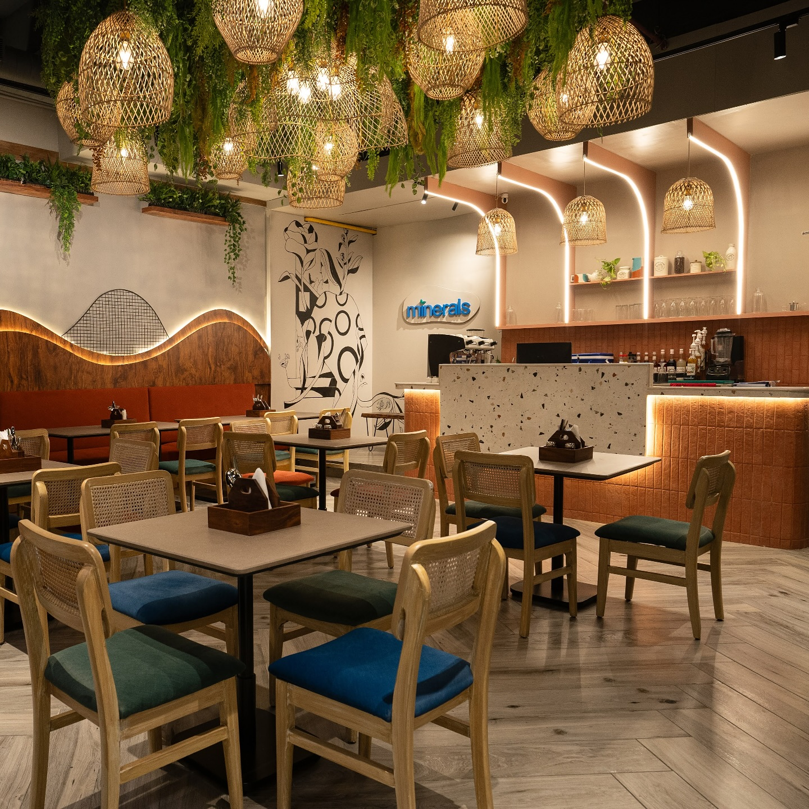
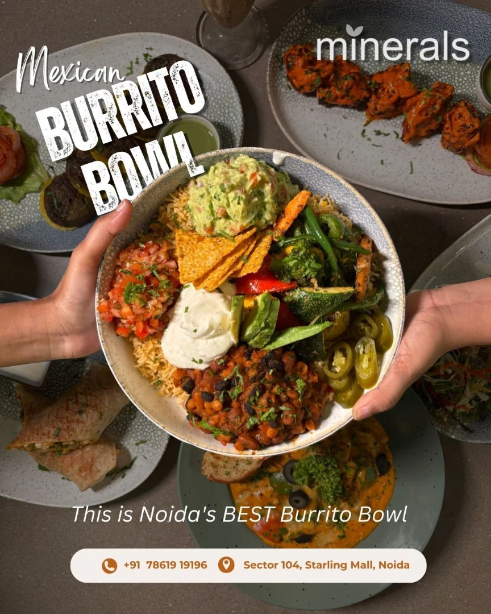
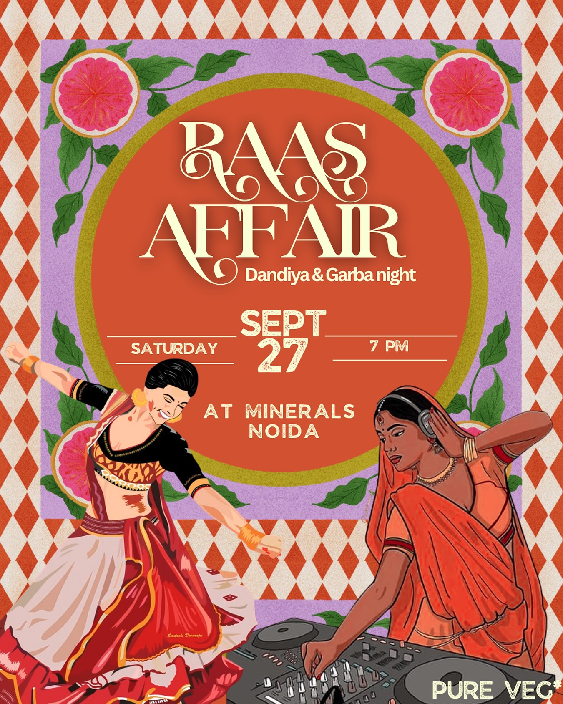
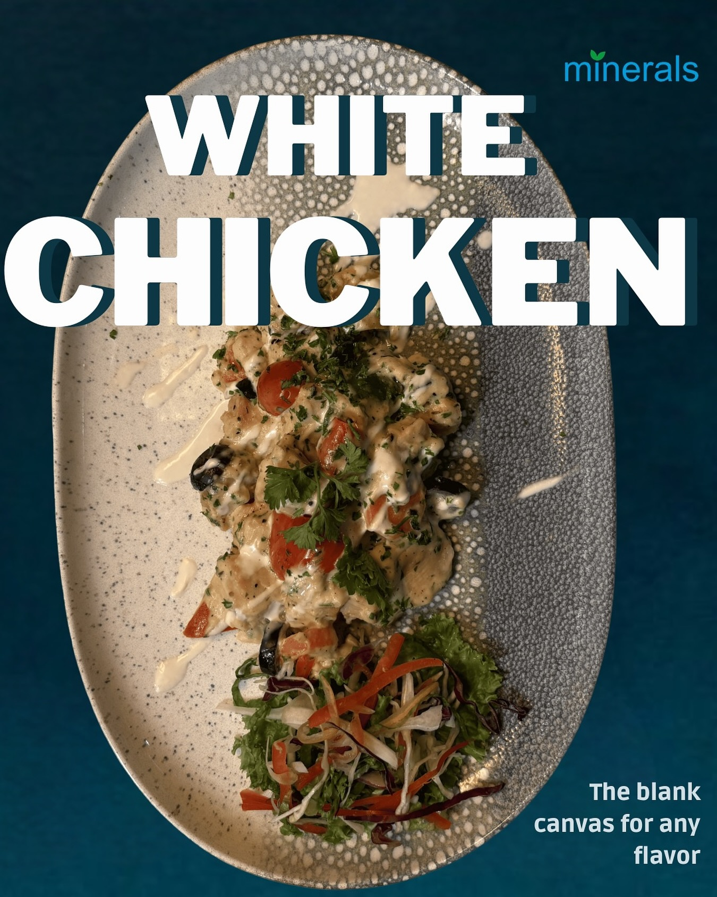
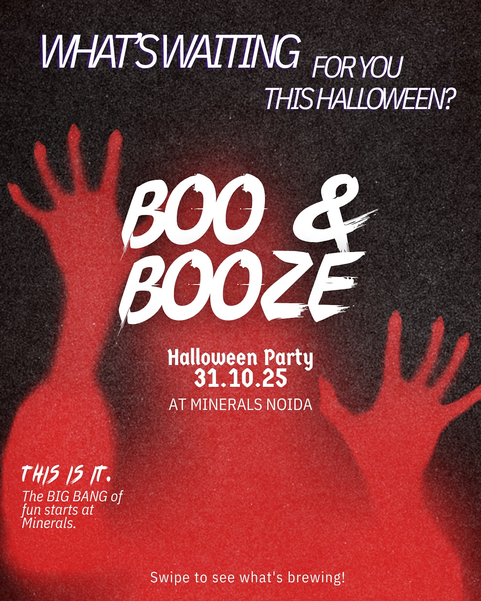
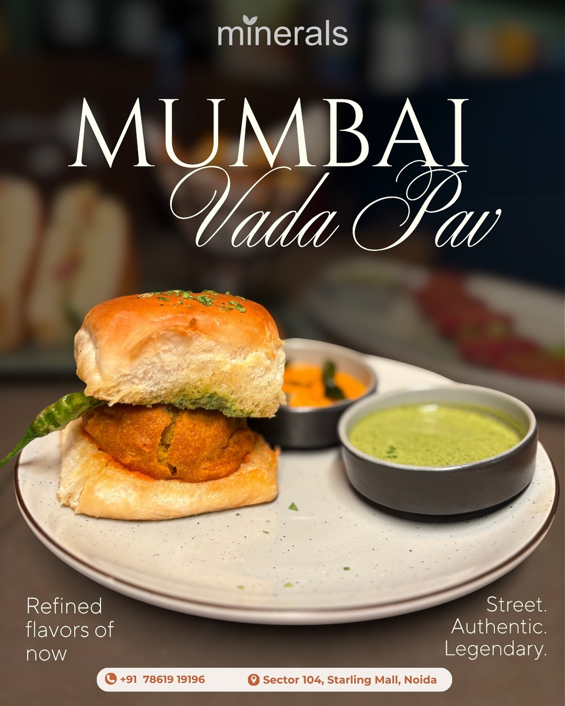

The art of selecting and presenting content that resonates on a deeper level.
Content Curation is often overlooked but it's the bridge between noise and signal. We developed a sophisticated curation engine for this brand, ensuring every piece of content served a purpose. The result is a highly engaged community and a brand voice that feels authentic and intentional.






